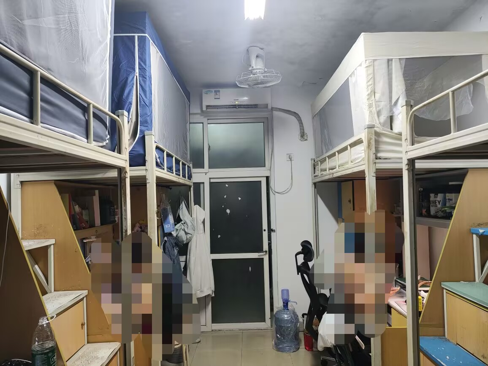
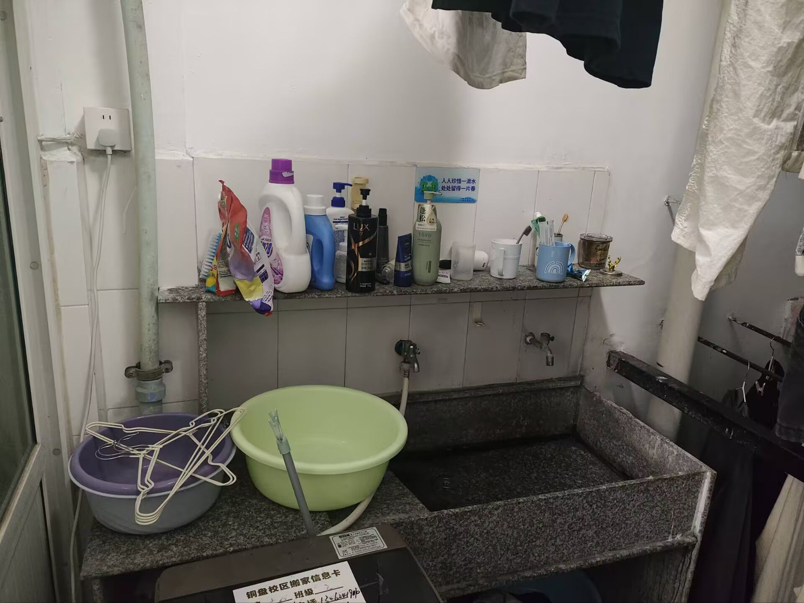
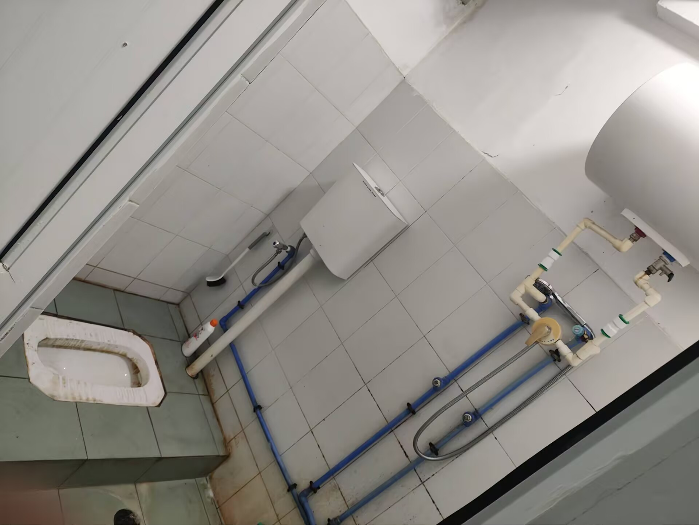
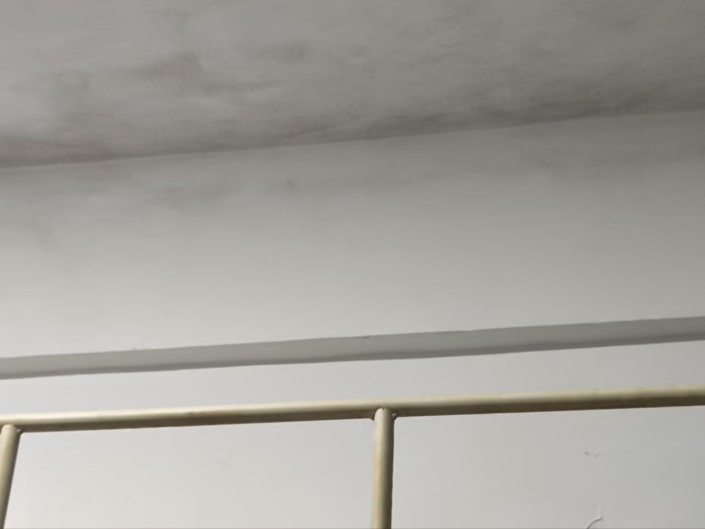

旗山校区指南
By 枫原.
岁律既周，寒暑易节。不觉间，诸位负笈入庠，已历一载光阴。 回首去岁初逢，犹怀克谨克慎之气；今看今朝重聚，已成游刃有余之才。学海扬帆，曾挑灯于伴读之夜；杏坛论道，共执手于同气之连。一载功成，既谢青涩；弱冠始加，终成大器。在此，特向诸位顺利致毕大一学年、学有所成，致以由衷之贺。
胜友如云，新程续启。值此新象，诸位亦将迁往旗山校区（逃离铜盘那个山沟沟）。
新居甫至，难免兼怀向往之情、未知之惑。广厦万间，何处安居？泮宫路远，何寻游学？鼎食钟鸣，何方果腹？为使诸君免摸索之仓促，多笃定之从容，特以此文为引，用作指南。且随笔墨，大开新居之画卷；预窥胜景，共启未来之新章。

Part Zero 搬家
以下内容仅代表个人观点，若与 年段通知冲突以年段通知为准
在介绍旗山校区之前，我须先向大家说明搬迁的一些注意事项。
校区搬迁一般在第二学期末或第三学期初完成，耗费时间一天，由学院出资租用货车运送行李。
搬迁前，会组织学生干部先行前往旗山校区考察宿舍环境并拍照，供同学们提前了解宿舍情况。
在搬迁的前一天，学生需将行李整理打包至旅行袋或行李箱中并贴好标签（标签由学院发放），一般凌晨四点后搬迁工作就将开始，届时大家需要根据志愿者和搬迁工人的引导将行李送至指定位置，低楼层由工人搬至楼下，高楼层由云梯负责运送，无需学生手动搬迁。需要注意的是，导员将为各个宿舍规划搬迁时间，请按照此时间将行李摆放至指定位置，否则可能错过本班车次，导致后续难以寻找行李。行李出发后，学生将由学院安排的大巴车运送至旗山校区，大巴车也是固定时间发车，大家注意发车时间和车牌号（会在段群中通知）。
如果由于不可抗力无法在学期末完成搬迁，学生需自行将行李带回家中或寄存至教学楼，待至学期初再进行搬迁，带回家中的行李此时亦需自行带回，寄存至教学楼的行李同样由货车运送至旗山校区。
行李运送至旗山校区后，工人将根据标签内容将行李运送至指定楼层，未粘贴标签或标签内容不清楚的行李将滞留在一楼，请大家及时寻找自己的行李，若未能找到，可关注段群中的失物招领消息或直接在段群中询问是否有人看到，请不要将行李长时间放置在宿舍外，影响交通，增大丢失风险。
有特殊需求的同学可自行搬迁（需提前申请），自行搬迁的同学需要避开统一搬迁时间，且租用的货车不能为敞篷货车，该标准以导员通知为准。
将行李放置在宿舍中，铺好床铺、放置好生活用品后，本次搬迁工作也就来到了尾声。
Part One 生活
欢迎大家来到福州大学旗山校区！
首先向大家介绍我们的宿舍所在：计算机学院本科生宿舍均在生活区三区（博学苑），从地理位置上来看位于学校的左下角，毗邻玫瑰园、紫荆园两个食堂，靠近教学区西二门，附近的体育设施有：风雨操场、三区操场、三区篮球场，具体可见图1。
我院宿舍均为四人间，上床下桌（床铺宽90cm，长195cm，架高110cm）、一体卫浴（就是没有干湿分离的意思），独立阳台（虽然很小HaHaHa）。
具体情况可以参考下图2、3、4：



入住时可能遇到的问题有：
1、墙壁掉漆
暑假将会对掉漆严重的宿舍进行重新粉刷，如认为宿舍掉漆严重但未在粉刷名单中，也可提出申请进行粉刷（须知：待粉刷的宿
舍不能放置行李）。
2、空调、门锁等设施损坏
在智汇福大->公寓报修中选择报修，如修理师傅迟迟未上门，可在对应界面中催促或联系辅导员催促，切勿自行修理。
3、部分宿舍较脏（特别是厕所）
如情况不是很严重可以自行清理，如果都是陈年污垢请及时联系清洁人员。
4、床帘安装困难
如图5所示，旗山部分宿舍有突起的梁柱，会对窗帘安装造成影响，此时主动弯曲床帘即可。

洗衣机
旗山宿舍未配备洗衣机，需要的同学可自行购买。
阳台洗手台上配有2个水龙头，其中靠墙壁的水龙头一般可在下方安装洗衣机水管。
阳台墙上一般会配有插座，但位置较高，部分洗衣机电源线不够长，此时需要额外安装一个排插（请务必注意防水）。
水龙头、插座位置可见图3
饮用水
是的，旗山校区既没有洗衣机也没有饮水机。
通常来说，有如下几种办法获取饮用水：
其一，购买热水壶，接自来水自行烧制。
其二，在超市购买矿泉水。
其三，订购桶装水。（为避免广告嫌疑，此处不贴出订购渠道）
违规电器
除吹风机、热水壶等产品外，可以认为能够制造大量热或制冷的设备一律算作违规电器，特别是电磁炉等厨具。这方面的限制主要还是为大家的安全考虑，希望大家能够理解。宿舍起火案例不少，笔记本烧了就损失1w了。
晚点名、晚熄灯、门禁
每栋宿舍楼下均设有门禁（男生宿舍的门禁一般意外损坏了），相对较为安全，门禁可通过刷脸或智汇福大扫码解开。
生活区、教学区大门每天晚上12点后关闭，进出均需要从小门通过，需刷脸或智汇福大扫码开门。
须知，辅导员能够看到大门门禁出入记录。
每晚10点，由各班安全委员或指定的晚点名人员进行晚点名，并上报请假、未归情况，请注意及时回到宿舍，不能及时归宿的，应提前告知晚点名人员。
每晚10点30分是宿舍熄灯时间，此时应关闭宿舍内部大灯（台灯、阳台大灯、厕所灯不受限制），10点30分至10点40分，将有专门的晚熄灯督导人员提醒晚熄灯。
快递
快递地址：福州大学旗山校区博学苑A/B区学生公寓xx号楼xxx室
旗山校区快递站点较为分散，分别为：
一区快递服务站（9号楼后）：邮政
三区快递服务站（36号楼后）：顺丰、京东、申通、圆通、极兔
学生街快递服务站：中通
筑安商业中心快递服务站：韵达
外卖
三区外卖地址：福州大学旗山校区博学苑A/B区学生公寓xx号楼xxx室
能送进校时将送至楼下外卖架，不能送进校时此地址的外卖也会送到三区门口。
白天大部分外卖都可以送到宿舍楼下，晚上九点左右，校外的外卖就不能送进学校了（只能送到三区门口），但食堂的外卖仍可以商家自配。
须知，校园送会比正常配送慢一些。
三区门口的外卖点是蟊贼多发地，最好30分钟内去取，不然可能就要饱某人之腹了。
Part Two 通勤
旗山校区占地3000多亩，各个生活区到教学区路程不尽相同，三区到教学楼的距离属于较远的，故光凭11路公交车较难满足学习生活需求。
回到图1，从三区到教学楼一般有两条路：
其一，由三区大门出，自学府南路向北，从西一门进入教学区，经文源路到达教学楼。
其二，由三区大门出，从西二门进入教学区，经嘉越路、远志路、方镜桥到达教学楼。
电动车
我校对电动车实行RFID管制，在校内骑行需要申请电子通行证。
目前来看，电动车仍是我校学生主要的交通方式之一，但存在较高的后续禁用风险，是否需要购买电动车需要大家自行考虑。
能告诉大家的是，尽量不要购买二手电动车，特别是无法过户的二手电动车，这类车其实就是黑车，无法申请电子通行证。而学长学姐的电动车即使有通行证，如无法过户，也不要购买，电子通行证将随持有人的毕业而过期。
购买电动车并办理正规牌照后，可在智汇福大->电动车登记中申请通行证，申请通过后将短信通知线下安装通行证。
三区电动车充电桩位于三区右侧，西2门入口左转。
学校目前对于禁电的态度尚不明确，在此我无法做出预测，只能请大家做好禁电的准备。
错了，完全禁电。
自行车/共享单车
校内有大量共享单车，大家也可以自行购买自行车用于通勤。
但值得注意的是，校内大部分路径有大量减速带，自行车（特别是共享单车）的骑行体验不佳。
如果禁电，或许大家也只能买自行车了。
小白（公交车）
小白是校内小型公交车的简称，因车辆整体呈白色得名。
可在微信小程序“一步校园”中浏览叫车点位并呼叫，上车后须向司机师傅说明下车点位。
收费标准：1元/次
地铁
在整张地图的右侧，我们可以看到两个地铁口，分别为金屿C、福大C，均属于福州地铁五号线。
需要注意的是，福州地铁对福州大学生有周末免费的优惠政策，具体申请流程辅导员将在段群中发布。
Part Three 主要功能性建筑
这里再次贴出图1。
食堂
学生食堂均位于生活区大门附近。
从距离上来考虑，三区的同学一般在玫瑰园、紫荆园就餐。
其中，玫瑰园为食惠餐厅（名字就叫这个），所售餐饭相对较为平价，但没有拼好饭便宜。
紫荆园中有烧烤、麦当劳、瑞幸、蜜雪等招商店铺，有需要的同学要注意点单地址在三区还是一区。
玫瑰园一楼有一家霸王茶姬和一家塔斯汀。
丁香园、京元餐厅在一区西1门附近，铜盘的部分商家在这里也有分档口。
学生街
自西2或西1门出，由学府南路向北就可以来到福州大学学生街。
学生街主营业务为餐饮，包含超市、眼镜店、电动车等杂货门类。
该区域较为复杂，编者去的次数不多（吗？），留待同学们自行探索。
运动场地（校园跑）
由生活区向右看可以看到，我校运动场地集中于中南部，即西2门附近，距离三区较近。
其中能够进行校园跑的场地有：第一田径场（一区）、第二田径场（三区）、风雨操场（三区）
在西2门附近，还有网球馆、篮球场等设施。
第二田径场右侧为宏晖文体综合馆，内含羽毛球场、乒乓球场，但经常被各种活动占用，且场地较为难抢。
体测一般在第一田径场进行。
校医院
西2门进门左拐就可以看到我校的校医院。
校医院科室其实较为齐全，但由于地理位置偏僻，人流量并不大，轻微的跌打损伤或感冒等病症可以就近前往校医院解决。
素拓
在三区通往教学楼的第二条路径上，方镜桥上方，是我校的素质拓展中心。
部分活动可能在此处举办，此外，大部分校级学生组织的办公室/活动室均在此处。
在素拓门口有一间青年之家，提供良好的自行环境，而且知道的人不多，但偶尔会有活动在此处举办。
图书馆
再向上看，可以看到我校图书馆，位于教学区中心。
官网：福州大学图书馆
图书馆开放时间：开放时间-福州大学图书馆
分布：图书分布-福州大学图书馆
需要注意的是，图书馆需要通过考试才能借阅书籍和使用自习室，考试需在微信公众号“福州大学图书馆”中完成。
在图书馆的中部有一家饮品店——大梦书屋，该店铺提供较好的自习环境，陈设优美，但价格死贵。
教学楼
环绕图书馆一圈的这些建筑就是我校主要的教学楼，我院大部分课程在这些地方教授。
自西向东共有七幢教学楼：西三至西一、中楼、东一至东三，该区域路线较为复杂，同学们需要在正式开学前进行踩点，否则可能开学第一天就迷路导致迟到——————是的我第一天迟到了但是是因为睡过头了。
到东三和到西三上课、到二楼和五楼上课所需时间不尽相同，同学们要提前规划好起床时间，以免迟到。
晋江楼/学习中心
学校的最右侧，在东大门附近有一幢鹤立鸡群的建筑——晋江楼。
其实晋江楼是我校的研究生科研中心，但对本科生来说，最重要的功能是位于晋江楼4-5楼的学习中心。学习中心内提供数千个自习空间，也包含讨论室（难申请）、博士单间（没资格），有部分沙发坐。部分竞赛（主要是数学建模）也会在此举行。
在智汇福大->综合预约中预约晋江楼学习空间。
另外，晋江楼一楼有我校的一些展览，感兴趣的同学可以抽空去看看。
院楼
我院院楼就在晋江楼上方，图中标注数计学院（现在不叫这个名了），从下到上分别为2号楼、3号楼。
2号楼主要为我院的一些行政机构，具体如下表：
| **部门名称 ** | **办公地点 ** | **办公室电话 ** |
|---|---|---|
| 党委办公室 | 计算机2#217 | 22865157 |
| 行政办公室（一） | 计算机2#218 | 22866359 |
| 科研办公室 | 计算机2#218 | 22865160 |
| 行政办公室（二）/资料室 | 计算机2#209 | 22865166/22866355 |
| 本科教学办公室 | 计算机2#203 | 22865161/22865169 |
| 研究生教学办公室 | 计算机2#202 | 22865174/22866353 |
| 团委办公室 | 计算机2#103 | 22866669 |
| 学工办公室 | 计算机2#102 | 22866354 |
| 工会办公室 | 计算机2#105 | 22865173 |
| 实验中心办公室 | 计算机3#406 | 22865175 |
对于本科生，最重要的是位于2#102的学工（辅导员）办公室和位于2#203的教学办。
3号楼低楼层主要包含我院的一些科创团队，如ACM、昆冈和我院的一些实验室。
从3号楼三楼开始主要为我院的实验中心，我们的专业课实验和实践课都在这里完成。
物理实验教学中心
在我院院楼上方，图中标注物信学院的位置是我校的物理实验教学中心，主要承担大学物理实验教学的功能。
该中心大家应该不陌生，但请注意这是离生活区最远的教学中心，注意时间规划。
Part Four 结语
希望大家能够尽快适应旗山校区的生活，然后快点毕业找一个955的工作内推学长我（bushi~
祝大家前程似锦！